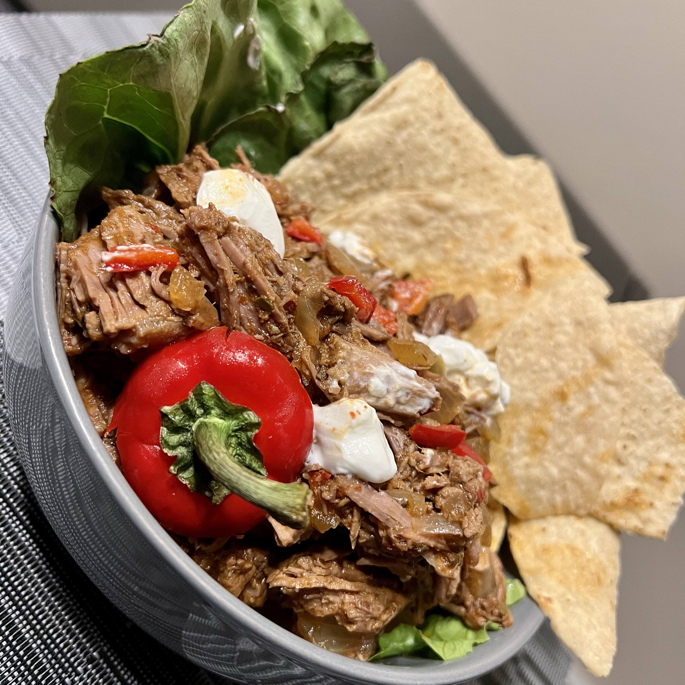

This is as close to a certain big chain's barbacoa meat I have ever made! It is full of intense flavors such as garlic, cayenne, and sweet, smoky chipotle. Make sure you scale down the cayenne and serrano if you can't handle heat because this recipe is packin' lots of it! Serve on corn or flour tortillas garnished with cilantro and topped with lime cilantro rice (from this website), black beans, pico de gallo, guacamole, cheese, lettuce, and sour cream
- 2 tablespoons vegetable oil
- 1 (2 pound) beef chuck roast, trimmed and cut into 4 to 6 pieces
- ⅓ cup apple cider
- 4 chipotle peppers in adobo sauce
- 3 tablespoons lime juice
- 4 cloves garlic, peeled, or more to taste
- 4 teaspoons cumin
- 1 serrano chile pepper, chopped (Optional)
- 1 tablespoon ground cayenne pepper, or more to taste (Optional)
- 2 ½ teaspoons dried oregano
- 1 teaspoon ground black pepper
- 1 teaspoon garlic powder
- ½ teaspoon salt
- ½ teaspoon ground cloves
- 1 cup chicken broth
- 1 small onion, finely chopped
- 3 bay leaves
- Heat oil in a large skillet over low heat, gradually increasing heat to medium-high. Add beef chuck pieces; cook until browned, about 10 seconds per side. Transfer beef to a slow cooker.
- Combine apple cider, chipotle peppers, lime juice, garlic, cumin, serrano pepper, cayenne pepper, oregano, black pepper, garlic powder, salt, and ground cloves in a blender or food processor; blend until smooth. Pour over beef in the slow cooker.
- Stir chicken broth, onion, and bay leaves into the slow cooker.
- Cook on Low until beef is fork-tender, 6 to 8 hours. Shred beef using 2 forks.